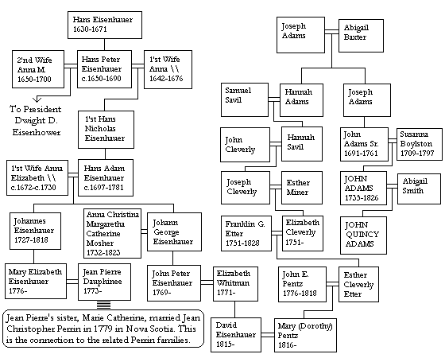

| Follow the above link to the main page for this topic or click the graphic below to visit the Homepage. |
 | Eisenhower & Adams: Perrin Family Connections in Nova Scotia James Benjamin Perrin Jr. |

Descent from Hans Eisenhauer to Mary Elizabeth Eisenhauer, wife of Jean Pierre Dauphinee. Shown on chart.
Hans Eisenhauer b.1630 d.1671 No spouse listed. One child listed:
Hans Peter Eisenhauer b.1650 & d.1690 in Germany. Had two wives: (1) m. abt.1672 to Anna (b.1642 d.1676). Had three children: 2'nd child was: Hans Nicholas Eisenhauer b.1674
Hans Nicholas Eisenhauer b.11oct1674 Wilhelmsfeld, Palatine, Germany. Died in Germany. Married Susanna (1672-1730). Had 7 children and the sixth child was Hans Adam Eisenhauer (1697-26mar1781).
Hans Adam Eisenhauer had two wives. 1'st wife was Anna Elizabeth. She was b.06oct1699 & d.15dec1743 in Germany. They were married in Germany sometime before 1724. They had eight children and the 3'rd child was Johannes Eisenhauer.
Johannes Eisenhauer b.18nov1727 in Wilhelmfeld, Palatine, Germany and d.26nov1818 in Lunenburg, Nova Scotia. Married to Maria Elizabeth Herman (1733-30nov1808) on 3feb1756 at St. John's Angelican Church in Lunenburg, Nova Scotia. They had ten children and the 10'th child was Mary Elizabeth Eisenhauer.
Mary Elizabeth Eisenhauer m. Jean Pierre Dauphinee. Jean Pierre was the son of Jean Dauphine (1726-1798) and Mary Elizabeth Banvard. Jean Pierre had a sister Marie Catherine Dauphinee b.1759. Marie Catherine was married to Jean Christopher Perrin (b.1755 Lunenburg, NS) on October 26, 1779. Mary d.30dec1835 River John, NS.
Hans Peter Eisenhauer above (1650-1690) had a second wife and through this marriage was descended the Eisenhoewer's that produced the US President, Dwight D. Eisenhower, born in 1890. This line is NOT shown on the chart.
Hans Peter Eisenhauer b.1650 & d.1690 in Germany. Had two wives: (2) m. abt.1674-1678 to Anna Katharina Mildenberger (1650-1700). They had 7 children. Her 7'th child (this would make it his 10'th child) was Hans Nicholas Eisenhauer b. abt.1695.
Hans Nicholas Eisenhauer (abt.1695-1750). No spouse listed. Had 2 children and the 2'nd child was Johann Peter Eisenhauer b.1716 in Germany.
Johann Peter Eisenhauer b.1716 in Germany d.1802 in the USA. Johann had 3 wives but only one child who's name was also Johann Peter Eisenhauer. The names of the three wives were: Elizabeth Graff, Maria Schmidt, & Anna Dissinger (b.1720).
Johann Peter Eisenhower b.1745 No spouse listed. With this generation the spelling of the name was changed. Had 9 children and the 9'th child was Frederick Eisenhower.
Frederick Eisenhower b.15jul1794 in Linglestown, PA and d.13mar1884. No spouse listed and had only one child, Jacob Frederick Eisenhower.
Jacob Frederick Eisenhower b.19sep1826 Elisabethtown, PA and d.20dec1906. He married Rebecca Matter (1825-1890) and had 7 children by her. The 7'th child was David Jacob Eisenhower.
David Jacob Eisenhower b.19sep1863 Elisabethtown, PA and d.1942. He married Ida Elizabeth Stover (1862-1946) and had 7 children by her. The 3'rd child was Dwight David Eisenhower.
Dwight David Eisenhower b.14oct1890 Dennison, TX and d.28mar1969 Washington DC. He married Mary (Mamie) Geneva Doud on 1jul1916 in Denver, CO. Mamie was b.14nov1896 in Boone, IA and d.31oct1979 in Washington, DC. They had two children and the 2'nd child was John Sheldon Doud Eisenhower.
John Sheldon Doud Eisenhower b.3aug1922 in Denver, CO. He married Barbara Jean Thompson on 10jun1947 in Fort Monroe, VA. Barbara was b.15jun1926 in Fort Knox, KY. They had 3 children and the 1'st child was Dwight David Eisenhower.
Dwight David Eisenhower b.1948 He was married to Julie Nixon, the daughter of Richard M. and Patricia Nixon. This Richard Nixon was of course another US President.